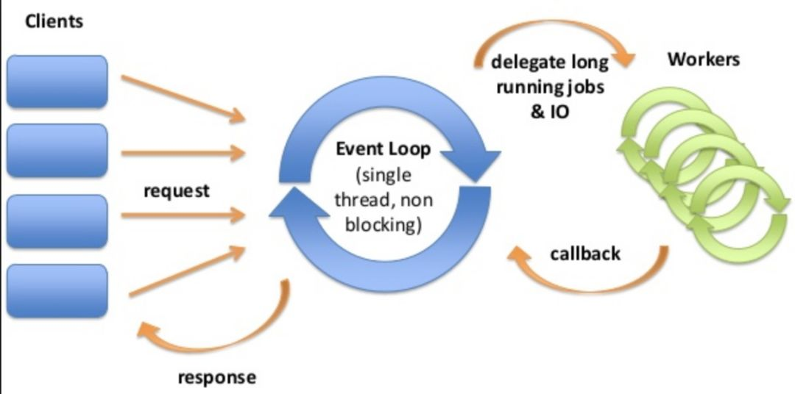

反应式编程在微服务下的重生
反应式编程在好几年前就已经出现了，它原理是基于反应式编宣言。但是，由于反应式编程推广速度比较缓慢，导致很多人现在对其不是很了解。
反应式编宣言：
https://www.reactivemanifesto.org
本文将从微服务角度阐述反应式编程，在深入解读之前，先为大家简单地介绍一些反应式编程的基本概念。
反应式编程概念简化版
1. 设计思想
反应式编程的提出，是在分布式编程刚兴起不久。当时没有各种 PaaS 平台，而分布式系统中，常常出现一个节点出问题，导致整个系统瘫痪的情况。所以，反应式编程的思想是：不等不靠，即当有一个节点慢下来的时候，整个系统都放慢，以此来避免灾难性的后果。
这样的想法，当然是有局限性的。一方面，虽然整个系统得到保全，但是系统的处理能力却大大降低，作为这个系统之外的用户或者其它应用还是受到影响的。另外，随着 PaaS 相关技术的发展，现在如果出现一个节点放慢的问题，我们既可以用熔断、限流，甚至扩容来处理，处理的选择有多种。
2. 组成
反应式编程的宣言是指导框架，具体的实现是有不同的版本。但是，它们都有两个共同的特征。
异步编程，非阻塞流：这是实现反应式编程的基础。

但是，很多人把反应式编程和函数式编程混淆了。如 Java 这部分语言 ，选用函数式编程来实现非阻塞式的异步编程。但是，其它的语言，如 golang, goroutine 和 channel 已经是异步和非阻塞的，那么它们不用函数式编程也一样可以实现反应式编程。
背压：背压是另一个自己把自己难倒的概念。

背压就是处理数据的接收方指挥发送方何时发送信息和发多少信息，比如我们排队过安检，安检的人招手了，我们才走过去。本来都是发送方有数据就发送，那么压力就在接收方，因为处理不了就挂了。现在压力反过来了，在发送方，就叫背压。这个名字不好，如果我起，就叫“憋呀”，简单易懂。发送方数据多了怎么办？憋着。正是这个憋，是背压形象直观的解释，而它保障了系统不会挂。
所以，用不是很准确的方式总结反应式编程的主要部分，就是异步编程、非阻塞流和背压。
微服务环境对分布式应用架构带来的挑战
一直以来很多人都会对反应式编程有这样的疑问：这样的设计，真的有用吗？
微服务已经算是很成熟的技术了，并且微服务是分布式系统的一员，所以很多人也会理所当然的觉得分布式系统也应该很成熟了。但是结果却恰恰相反。

我个人的理解，并不是微服务走错方向了，而正是由于微服务的普及，产生了许多以前没有遇到过的新问题。
而其中最主要的问题，就是微服务之间的通信问题。首先，与单体应用不同，微服务之间谁也无法控制谁，是无法保障通讯的顺序的， 这就要求是异步编程。同理也会要求通讯是采取非阻塞方式，不然一旦I/O被一个线程占了，其它线程就没法用了。然后就是微服务之间如何协调通讯速度的问题。没错，现在有service mesh, 有熔断，限流，也有扩容。但是，这些还不够。因为这些手段都是要先观察到异常，然后才能处置。而很多时候异常是很不容易察觉的。比如K8s的扩容，每30秒采集一次。还要算平均值。这些都很难及时反应。等到算出有问题，时间已经过了很久。而且很多的时候，故障就是小抖动，突然慢下来，但无法体现在平均值上。吞吐量的匹配，是一个棘手的问题。
这个时候，反应式编程的优点就体现出来了。它不管什么原因，处理不了就不请求发送。而且是立刻的。
微服务环境对反应式编程的新要求
不能以为反应式编程好像就是可以在微服务环境下安枕无忧。其实，它也面临改进的要求。
端到端的背压
过去的反应式编程一般只考虑两个分布应用之间的通讯。但是随着微服务架构的复杂化，从A到B也许中间要经过其他的环节。这个时候，怎么传递背压的信息，而不是在中间环节丢失；怎么从端到端执行背压，就显得特别重要。这对很多现有的反应式编程框架都是挑战。与云原生环境的整合
一些早期反应式编程框架，有自己的集群管理功能。而且这些功能，是以胖SDK的方式捆绑在反应式编程基本功能上的。但是在强调云原生的今天，这似乎不是优势而是缺点。相反，把基本的反应式编程功能与服务注册，发现，以及负载均衡等功能分离，充分利用云原生的优势，与之协调互补，则是未来的趋势。
性能
最后我们谈一下很重要的一环：性能。一直以来，很多人都有疑问：背压的通讯方式真的好吗？如果一切环境是可控的，网络带宽是无限的，那么传统的阻塞通讯是有优势的。这就是为什么JVM费那么大劲实现这些功能的原因。因为Linux其实是非阻塞的，而20多年前，应用大多是单体的。但是在现实的环境下，对于分布式应用，在数据量较大的时候，非阻塞通讯的优势就体现出来了。特别当有合适的网络通讯方式支持背压的时候，这种优势更加明显。
总结
最近的趋势告诉我们，在分布式应用架构变成熟的过程中，反应式编程的作用慢慢被重新认识。事实上，反应式编程自身也在发展中，特别是在网络传输方面的进展，一定会在未来分布式应用架构中发挥更大的作用。
本文作者：
Andy Shi :
GitHub ID szihai，阿里巴巴中间件高级技术专家，长期从事 Service Mesh 和微服务框架的技术推广工作。
文章缩略图
Photo by Quino Al on Unsplash
/ 推荐一个值得关注的技术号「阿里巴巴云原生」/

/ Dubbo Ecosystem - 从微服务框架到生态 /

©每周一推
第一时间获得下期分享
☟☟☟
Tips：
# 点下“在看”❤️
# 然后，公众号对话框内发送“浴巾“，试试手气？?
# 本期奖品是来自淘宝心选的绵柔浴巾。